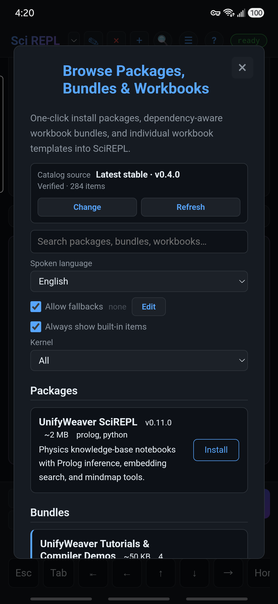
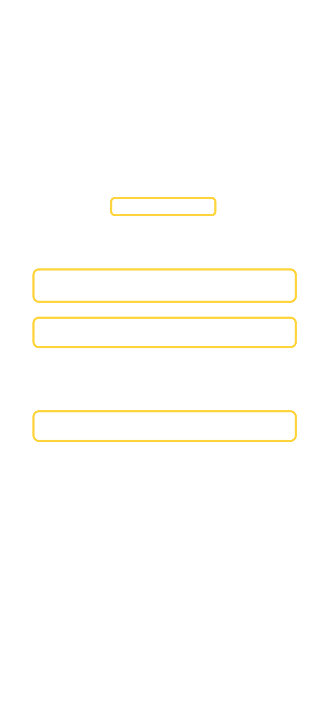
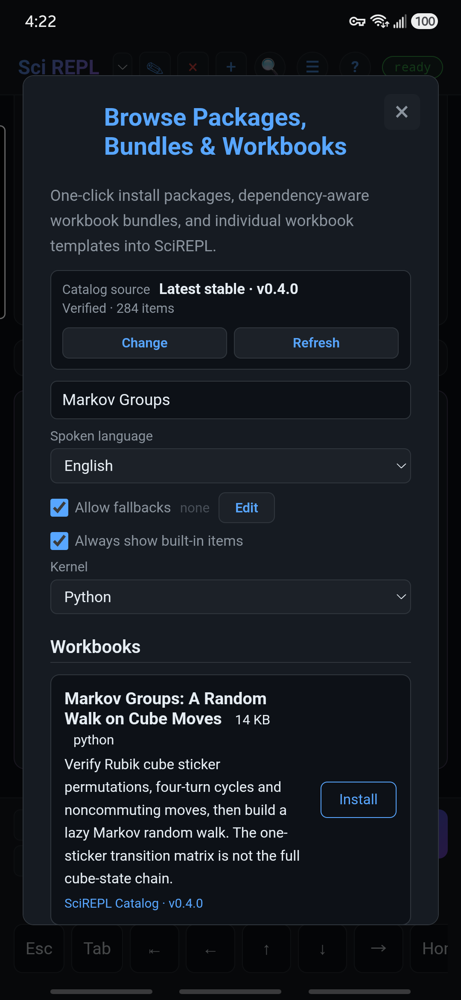
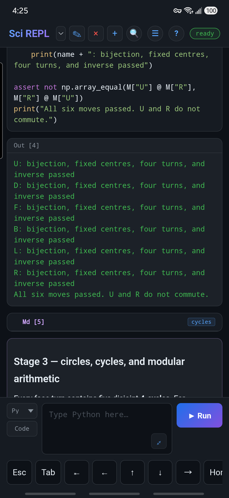
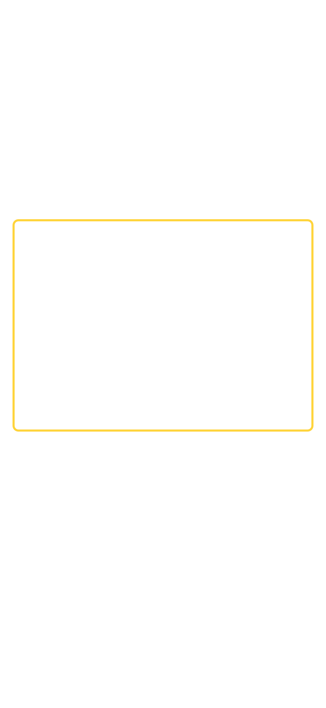
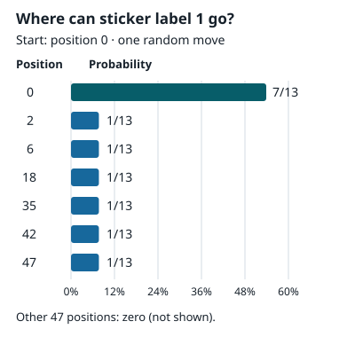
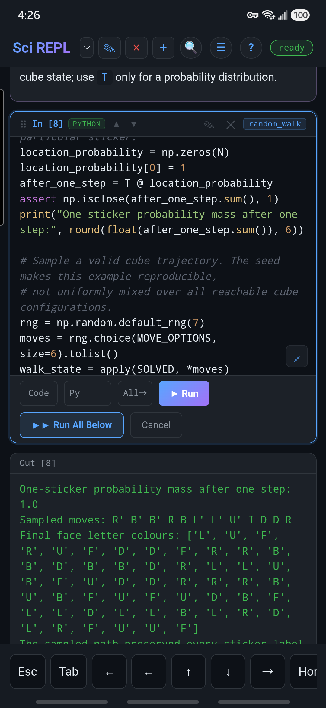
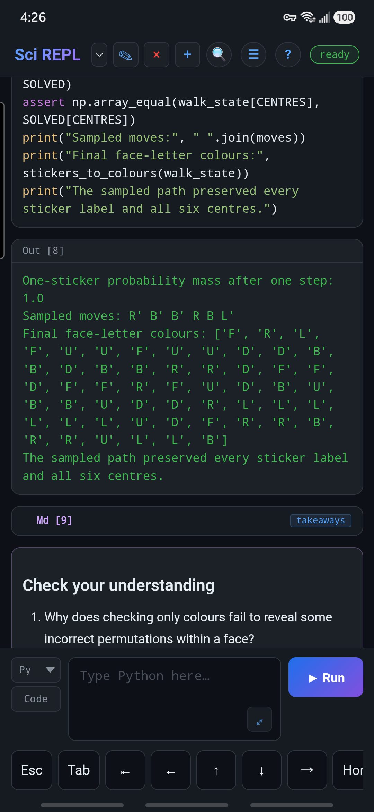
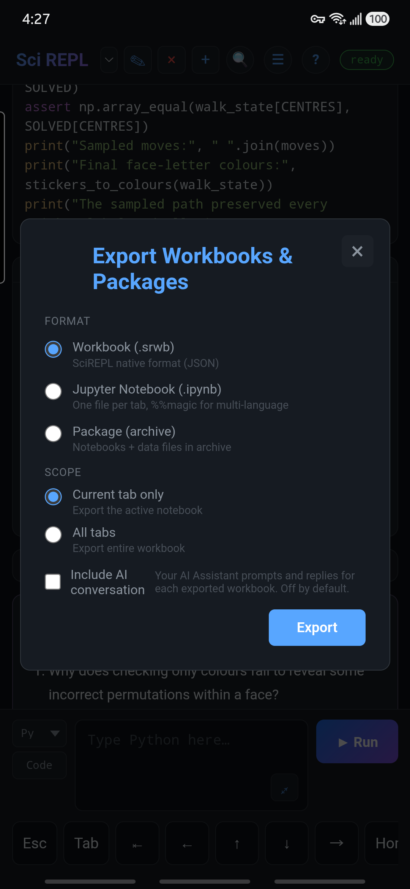
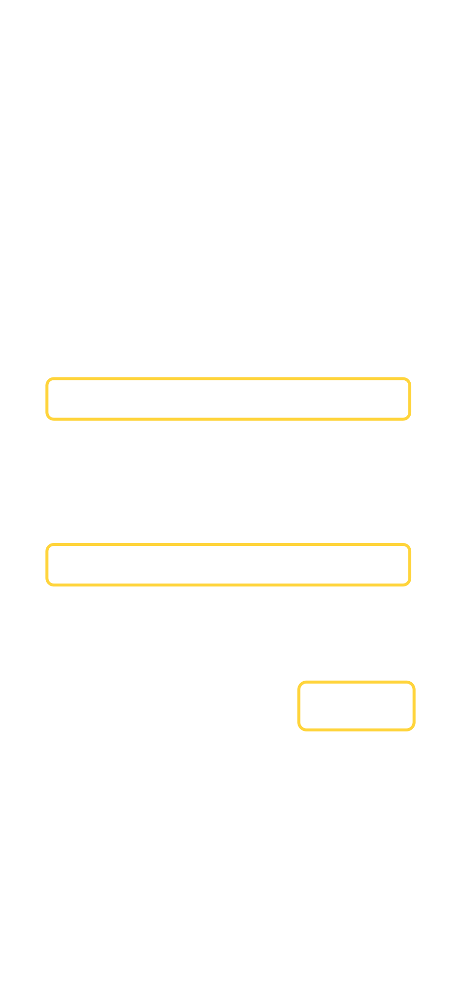

Learn by doing
Explore a workbook from the catalogue
Find the existing Markov Groups: A Random Walk on Cube Moves workbook, run its four Python cells, shorten its random walk, and save your own copy. The focus is on using SciREPL; you do not need to know matrix algebra or solve a Rubik's Cube.
Real phone screenshots show SciREPL Pro 1.4.0-debug on a Samsung Galaxy S24+, captured on . They illustrate the shared workbook workflow, not a released Pro build. Free and other versions may arrange some controls differently. The example is the English workbook from SciREPL Catalog v0.4.0.
Step 1
Browse, filter, and search
- Open Menu → Browse Packages, Bundles & Workbooks. In Free, the optional 📦 header shortcut opens the same screen when it is visible. The Appearance walkthrough shows how to enable it.
- Browse the list or use its filters. For this English example, choose English under Spoken language and Python under Kernel. All spoken languages and the kernel's All option also work, but show more entries.


- Type Markov Groups in the search field. Under Workbooks, find Markov Groups: A Random Walk on Cube Moves. Check the full title before installing: this is a workbook template, not a package to add to Python.
- If the keyboard covers the result, use its hide-keyboard button or press Android Back once to dismiss it. Keep Browse open and scroll to the matching workbook.

What else is available? Browse the workbook list on GitHub (English). Language editions of a lesson are separate entries, not different lessons.
The GitHub link shows the latest development contents. SciREPL normally uses the latest stable catalogue release, so some workbooks shown on GitHub may not yet appear in Browse. In SciREPL, clear the search and try CSV, Prolog, Lua, or statistics; choose All under Kernel when exploring other languages.
If a privacy notice appears: fetching or refreshing the remote catalogue needs a network connection. Read the disclosure, scroll inside the dialog to the bottom, and tap I Understand only if you agree. Closing the notice prevents that network refresh; built-in entries and previously cached catalogue entries may still appear. See privacy and local data.
No matching workbook? Check the language and kernel filters, then use the catalogue's Refresh control. An older app may not have the same catalogue controls. Alternatively, save the pinned v0.4.0 workbook file to your device, then choose Menu → Import File and select markov-groups.srwb. If your browser displays the file as text, use its save/download action and keep the .srwb extension. The manual workbook import walkthrough shows the steps using Simpson's Paradox from GitHub's main branch; choose the Markov file above to continue this lesson.
Step 2
Open the workbook and inspect its cells
- Tap Install on the workbook card. If the button already says Installed, exit the Browse menu and choose the existing workbook from the workbook selector instead.
- The workbook normally becomes the selected tab. If the Browse menu stays open, exit it. If automatic switching is off, choose Markov Groups: A Random Walk on Cube Moves from the workbook selector next to SciREPL in the header.
- Read the opening text, then scroll through the cells. Markdown cells explain the lesson; Python cells contain the code you will run. Each Python cell has a name to help you find it.
Install does not mean Run. Installing this remote catalogue workbook adds its cells without executing its Python code. The v0.4.0 template has no saved Python outputs, so inspect the code and run it yourself. No AI account, API key, external dataset, or extra package installation is needed; the code uses NumPy with SciREPL's Python runtime.
Step 3
Run the four Python cells in order
For a saved cell, tap the ✎ pencil in that cell's header, then tap that cell's own Run. This executes the existing cell; the bottom new-cell panel creates a different cell.
What do these names mean? cube_moves and check_moves are names shown on the cells, not commands to type. Find the matching name, then use that cell's pencil and Run. The named cells and cross-language paths tutorial shows how to assign names and use them as references such as /nb/cube_moves/.code.
- Run
cube_moves. It defines the moves and helpers. ExpectBuilt six clockwise quarter-turn matrices with fixed face centres. - Run
check_moves. It checks that no sticker is lost, centres stay fixed, and four repetitions of each quarter turn return to the start. After six passed lines, expectAll six moves passed. U and R do not commute.


check_moves, not saved results supplied by the catalogue.- Run
show_turn. It prints the U-turn cycles and sticker labels before and after a turn. The front top row changes from[19, 20, 21]to[46, 47, 48]. The comparisonU then R equals R then U: Falseshows that move order matters.
Part of the printed output:
U cycles, shown as one-based sticker positions:
1 -> 3 -> 9 -> 7 -> 1
2 -> 6 -> 8 -> 4 -> 2
19 -> 37 -> 28 -> 46 -> 19
20 -> 38 -> 29 -> 47 -> 20
21 -> 39 -> 30 -> 48 -> 21
F top row labels before U: [19, 20, 21]
F top row labels after U: [46, 47, 48]
U then R equals R then U: FalseThe long face-letter list is omitted here. The cycle lines use one-based positions; the row comparison shows sticker labels. These are different meanings, even though the solved cube initially gives them matching numbers.
- Run
random_walk. It prints a one-sticker probability total of1.0, a 12-step sampled path, final face-letter labels, and a message confirming that every sticker label and all six centres were preserved.
Optional: preview the revised Stage 4
The steps and phone screenshots above use the stable v0.4.0 workbook. The revised workbook download is a development preview, not yet the stable catalogue. Import it with Menu → Import File if you want to try its shorter, interleaved explanation and code cells.
In that preview, run cube_moves, check_moves and show_turn first, as above. Then:
- Run
transition_matrix. It buildsT, the probability matrix for one sticker's location after one uniformly chosen option:I, a face quarter turn, or its inverse. - Run
sticker_step. It follows sticker label 1, initially at zero-based position 0. Its location probabilities sum to1.0. The chart below shows the destination probabilities computed by that cell.

after_one_step = T @ location_probability; it is not a phone screenshot or a new output produced by the workbook. Positions are zero-based. The other 47 positions have probability zero and are omitted. The sticker's label stays 1.| Destination position | Probability |
|---|---|
| 0 | 7/13 ≈ 53.85% |
| 2, 6, 18, 35, 42, 47 (each) | 1/13 ≈ 7.69% |
| All other 47 positions | 0 |
- Run
random_walk. It samples a 12-option path for the whole cube, using the definitions fromtransition_matrix. This is different from the one-sticker probabilities above. The next section'ssize=12edit works in this cell in either edition.
You can also choose Menu → Run All Cells after inspecting the workbook. Its Python cells are already in the required order. Do not reorder them: later cells reuse definitions from cube_moves.
First run slower? Python may need time to initialize, and a runtime download or network fallback may need your consent. Wait for the status badge to return to ready and check the cell's output for errors. If a later cell reports an undefined name after a restart, run the Python cells from the beginning; saved output is not the same as live Python definitions.
A little meaning behind the output
The workbook tracks 54 individually labelled stickers, not just six colours. A legal move rearranges those labels. Four repetitions of one quarter turn return to the starting arrangement, but turns of different faces can give different results when their order changes.
The random walk chooses among 13 options: stay still (I), six quarter turns, and their six inverses. Its 54×54 probability matrix describes the location of one sticker, not every full-cube configuration. A probability total of 1.0 means that this sticker's location probabilities sum to one; it does not prove that the cube is uniformly scrambled.
This workbook prints text and face-letter lists. It does not draw or animate a cube, and its seeded short path is not evidence of a uniformly mixed scramble.
Step 4
Shorten the walk and rerun the saved cell
- Find
random_walkand tap its ✎ pencil. - Find this line and change only
size=12tosize=6:moves = rng.choice(MOVE_OPTIONS, size=12).tolist()Leave
np.random.default_rng(7)unchanged. The seed makes this example reproducible. - Tap the Run button in that saved cell's editor. The output is refreshed; the
Sampled moves:line now contains six options instead of twelve.Icounts as an option even though it leaves the cube still.


For this change, rerun only random_walk while the earlier definitions are loaded. If you edit cube_moves instead, rerun the later Python cells too. Outputs record their last execution; they do not automatically recalculate when another cell changes.
If you opened the editor by mistake, choose Cancel. To return to the original example, change size=6 back to size=12 and run the cell again.
Curious about the face directions? The workbook's coordinates cell gives the global axes and each face's right, up and outward normal. The pictures, diagrams and equations tutorial shows how to put that kind of explanation into a workbook. Coordinate diagrams are being added to the catalogue's development copy; the pinned v0.4.0 copy above does not include them.
Step 5
Export your own workbook copy
- Keep the Markov Groups workbook selected, then open Menu → Export Workbooks & Packages, not Export Document.
- Choose Workbook (.srwb) and Current tab only.
- Tap Export and save the copy somewhere you control. Android opens a share/save flow; a browser downloads a file. Keep the
.srwbextension.


The workbook needs no separate data file, so an .srwb copy is enough for this lesson. You can reopen it with Menu → Import File; run its Python cells from the beginning when starting a fresh runtime.
Local recovery is not a backup. Clearing app/site storage or uninstalling can remove local work. Android and browser sessions do not automatically share your edits. Export does not publish your changes to the catalogue; it gives you a separate copy.
For the basics of saved-cell editing, see the first-workbook interface walkthrough. For an example that reads and carries a separate data file, try the CSV workbook walkthrough. The workbooks reference covers cell types and stable cell names.